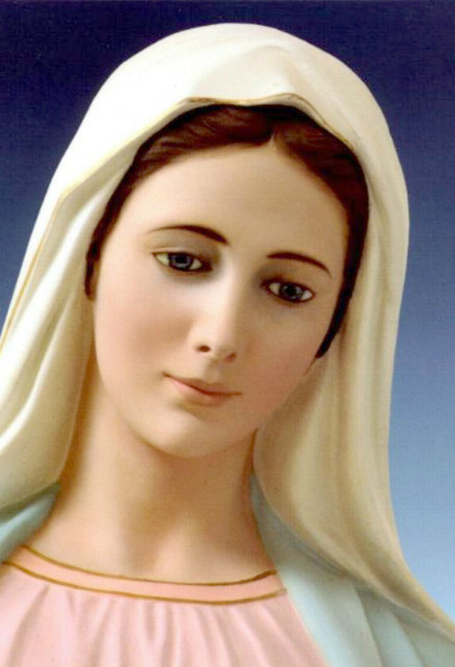

<section class="intro" id="home">
    
		<h2>"La familia que reza unida, permanece unida"</h2>
		<h2>"Un mundo que reza es un mundo en paz"</h2>
		<p class="cite">Siervo de Dios P. Patrick Peyton CSC</p>
</section>


<script>
  (function(i,s,o,g,r,a,m){i['GoogleAnalyticsObject']=r;i[r]=i[r]||function(){
  (i[r].q=i[r].q||[]).push(arguments)},i[r].l=1*new Date();a=s.createElement(o),
  m=s.getElementsByTagName(o)[0];a.async=1;a.src=g;m.parentNode.insertBefore(a,m)
  })(window,document,'script','https://www.google-analytics.com/analytics.js','ga');

  ga('create', 'UA-81616630-1', 'auto');
  ga('send', 'pageview');

</script>